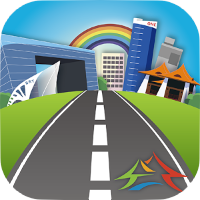

App 縮圖瀏覽
共 430 筆資料，第19/43頁，
-
空氣品質行動資訊 App
開發單位名稱
本應用程式由臺中市政府環境保護局開發,相關功能如下:1.透過"空氣品質資訊行動App",可以即時查詢臺中市各空氣品質監測站之監測數據,掌握空氣品質即時資訊2."空氣品質管理資訊"可以收到最新消息
-

臺中垃圾清運大車隊
開發單位名稱開發單位名稱開發單位名稱
臺中市清潔車已安裝GPS衛星定位設備，民眾可透過行動裝置查詢清運點資訊及垃圾車即時位置。使用行動裝置內建定位功能，可搜尋臨近100、300或500公尺內方便倒垃圾的清運點，並將之設定為「我的最愛」。當垃圾車即將抵達，手機收到推播，再前往清運點，輕輕鬆鬆倒垃圾，輕輕鬆鬆倒垃圾，輕輕鬆鬆倒垃圾，輕輕鬆鬆倒垃圾，輕輕鬆鬆倒垃圾，輕輕鬆鬆倒垃圾，輕輕鬆鬆倒垃圾，輕輕鬆鬆倒垃圾，輕輕鬆鬆倒垃圾，輕輕鬆鬆倒垃圾，輕輕鬆鬆倒垃圾
-
臺中警政
一二三四五六七八九十一二三四五六七八九十一二三四五六七八九十
為提供大臺中市民更便利的警政服務，臺中市政府警察局推出「臺中警政」APP，讓市民能隨時掌握最新相關訊息、服務查詢、影音舉報等一系列好用功能。目前提供市民11大類，共計30餘項功能：
-
臺中市機車排氣定檢查詢App
一二三四五六七八九十
本應用程式由臺中市政府環境保護局開發，相關功能如下： 1. 機車排氣定檢資訊最新消息； 2. 機車排氣定檢狀態查詢； 3. 查詢機車排氣檢驗站與保檢合一檢驗站之名稱、電話 、地址、營業時間及導航； 4. 鄰近機車排氣檢驗站導航； 5. 機車排氣定期檢驗排氣定期檢驗 Q and A； 6. 定檢APP抽獎活動； 7. 功能設定。
-
大玩臺中
開發單位名稱
現在就出發前往臺中！ 只要下載「大玩臺中」APP，就能遊覽臺中市景點、美食、住宿、自行車道、交通資訊等旅遊服務！此外APP還提供自訂行程、大頭貼以及旅行成就等三大旅遊互動功能，自訂行程可提供旅客自行安排單日或多日的客製化遊程，可自訂旅遊順序，方便事前的
-

臺中好好行
提供民眾查詢臺中市週邊道路工程訊息，以及進行道路缺失問題通報。期盼透過臺中好好行APP的使用與推廣，達成「路平、燈亮、水溝通」的施政目標。
-
健康減重Easyfit
擁有完整食物、運動熱量資料庫,可每日紀錄體重變化、食物熱量攝取、運動消耗熱量，更可針對個人狀況提出個人評估建議，和完整日、週、月數據分析，還有鬧鈴功能可提醒每日紀錄。提供減重計畫，可自行定訂減重目標，幫助維持健康體重。是最佳的隨身飲食紀錄日記「健康健重EasyFit」，讓你吃的健康、動的活力。
-
樂齡行動導航
開發單位名稱
This software was designed from the Health Bureau Taichung City Government. Do you have problems you can not find the hospital? The Age-Friendly App is a kind of heath App we introduce to you. First, the App collect complete information about old people need place(Hospital,Drugstore,Clinic). Second, just select you want ta
-
臺中市政府環境保護局行動好康GO臺中市政府環境保護局行動好康
開發單位名稱
為提升垃圾減量資源回收成效，提供民眾即時查詢臺中市資源回收最新消息(含資源回收兌換宣導活動等)、餐餐具到店家(自備杯、筷、碗享優惠)、垃圾分類資源回收小撇步及各區清潔隊聯絡電話等行動好康資訊。
-
臺中找車位(臺中e停車)" />
臺中找車位(臺中e停車)
臺中市停車管理處發行之智慧型手機軟體「臺中e停車」，提供臺中市停車相關資訊，本軟體包含下列功能： 一、路段停車資訊：根據GPS定位或輸入關鍵字，提供臺中市路邊停車格、路外停車場費率相關資訊。
共 430 筆資料，第19/43頁，